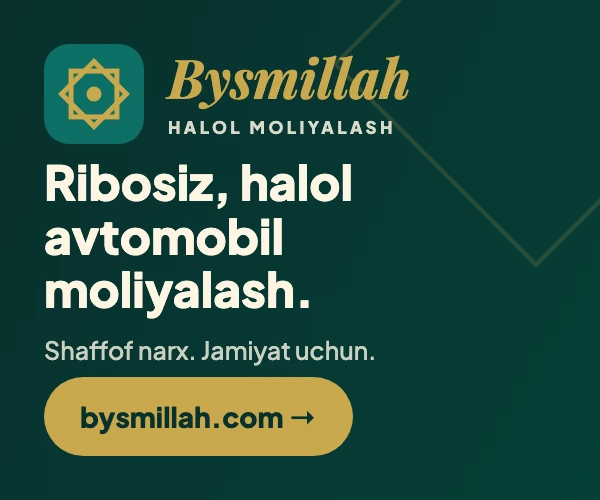

Husiylar Saudiyani Sanoa aeroportiga zarba berishda aybladi; koalitsiya 136 nishonni yoʻq qildim dedi
Husiylarga qarashli OAV Saudiya Sanoa aeroportiga 4 zarba berdi deb daʼvo qildi; Saudiya koalitsiyasi esa 136 husiy nishoni yoʻq qilinganini eʼlon qildi. Daʼvo va rasmiy bayonot alohida keltiriladi.
2026-yil 10-oktabr kuni husiylarga qarashli Al-Masira telekanali Saudiya koalitsiyasi Sanoa xalqaro aeroportiga 4 marta havodan zarba berganini, shuningdek Hajja viloyatidagi (al-Mahobisha) aloqa tarmogʻiga 3 marta zarba berilganini daʼvo qildi. Husiy OAVi qurbonlar haqida maʼlumot bermadi. Anadolu agentligiga koʻra, Saudiya rasmiylari va Yamanning tan olingan hukumati bu aniq daʼvoni darhol izohlamadi.
Bu — bir tomonlama daʼvo boʻlib, Sanoa aeroportiga zarba masalasi mustaqil tasdiqlanmagan va koalitsiya bayonotida aynan bu nishon tilga olinmagan.
Koalitsiyaning rasmiy bayonoti
Shu kuni Saudiya boshchiligidagi koalitsiya vakili general-mayor Turki al-Maliki keng koʻlamli operatsiyada 136 husiy harbiy nishoni va 3 ta raketa uchirish moslamasi yoʻq qilinganini, yaman kuchlariga havodan qoʻllab-quvvatlash berilganini eʼlon qildi. Al-Maliki: «Biz terrorchi husiy guruhining ballistik raketa tarmogʻini qoʻporib tashlash va yoʻq qilish ustida ishlayapmiz».

Bir kun avval — Riyodga hujum
9-oktabr kuni husiylar Riyoddagi Qirol Xolid xalqaro aeroportiga hujum qildi; Saudiya fuqaro aviatsiyasi idorasi (GACA) maʼlumotiga koʻra, hujumda bir uchuvchi (kapitan Hamud Ali al-Kalsamiy) va yana ikki saudiyalik fuqaro halok boʻldi, turli millat vakillari yaralandi.
Kontekst — Makka pakti
Iyul oyidan beri Saudiya-husiy toʻqnashuvlari 2022-yildagi sulhdan keyingi eng keskin bosqichga chiqdi. 5-oktabr kuni Saudiya, Turkiya va Pokiston 7-avgustda imzolangan «Makka pakti»ni birinchi marta faollashtirib, jamoaviy «tiyish choralari» koʻrish va Saudiyaga kuch yuborish haqida kelishdi. Shu davrda Yaman Prezidentlik kengashi Sanoani qaytarish boʻyicha harbiy kampaniya boshlagan edi.